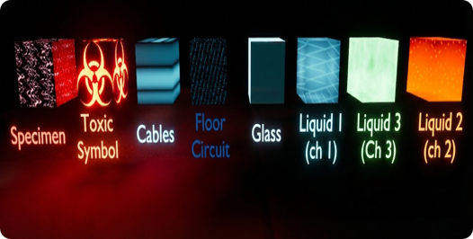
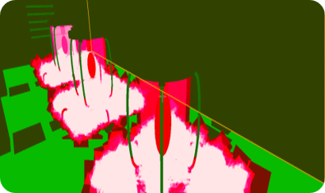
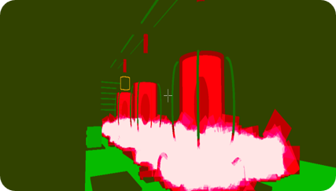
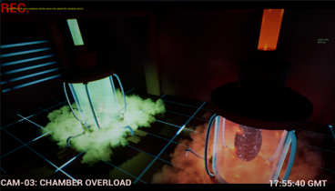

Reactive Containment Chamber
Real-time Unreal shader showcase. A sci-fi containment scene using reactive liquid, translucent glass, pulsing specimen shaders, animated cables, floor circuits, Niagara smoke, and CCTV post-processing.
Category: Technical Projects | Role: Technical Artist and Shader Programmer | Video
About the Project
Reactive Containment Chamber is a real-time shader programming project built in Unreal Engine 5.5.4. The scene is a compact sci-fi laboratory centred around a containment tank containing animated reactive liquid and a pulsing specimen.
The aim was to demonstrate multiple shader techniques in one readable environment. Instead of presenting isolated material tests, the project combines translucent liquid, glass refraction, procedural emissive effects, World Position Offset animation, floor circuitry, Niagara smoke, and a CCTV-style post-process effect.
My Contribution
My main contribution was the technical art and shader implementation. I created the reactive liquid shader using procedural HLSL noise, opacity control, emissive colour blending, and Depth Fade. I developed the glass tank material using translucency, Fresnel rim lighting, and refraction so the outer shell stayed visible while still revealing the contents inside.
I built the specimen shader with pulsing emissive vein patterns so it felt like the energy source of the chamber. That energy was extended into the surrounding environment through animated cable wobble using World Position Offset and procedural floor circuit pulses.
Technical Breakdown
- Reactive liquid shader using procedural HLSL noise, opacity control, emissive blending, and Depth Fade.
- Translucent glass tank shader using Fresnel rim lighting and refraction.
- Pulsing specimen shader with emissive vein patterns.
- World Position Offset animation for cable wobble.
- Procedural floor circuit pulses driven by shared material values.
- CCTV post-process shader using screen-space distortion, scanlines, vignette, and colour grading.
- Blueprint trigger that switches from normal view to a fixed surveillance camera angle.
- Material Parameter Collections controlling tank intensity, liquid speed, glass distortion, cable wobble, circuit speed, and post-process strength.
Performance Work
I evaluated the scene using Shader Complexity, Material Stats, FPS testing, and GPU profiling. The largest optimisation challenge came from combining translucent shaders, post-processing, emissive materials, and Niagara smoke in one scene. I created quality variants and made visual trade-offs to keep the scene running smoothly while preserving the sci-fi atmosphere.
Skills Used




